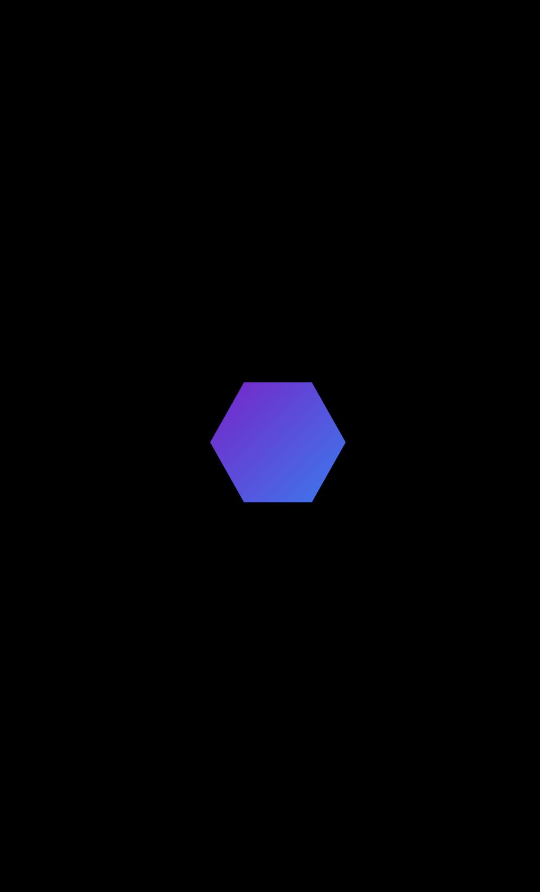

⚡ Futuristisches Phone Mockup ⚡
Klicke unten auf
Projekt ansehen
, um die Live-Vorschau im Handy zu öffnen.

Landingpage für Berliner Kanzlei Projekt 01
· 07/2025
· Lieferzeit 7 Tage
· € 799,00*
Projekt ansehen
Projekt ansehen